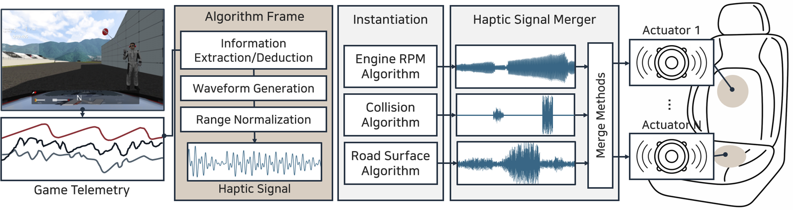

IEEE ToHJournal J1
Telemetry-Based Haptic Rendering for Racing Game Experience Improvement
IEEE Transactions on Haptics (IEEE ToH), 2024 · Vol. 17, Issue 1 · pp. 72–79
- #Haptic Rendering
- #System
- #Game

Abstract
Many recent games, such as racing and flight games, open their game telemetry data to users by storing them in the local memory. Such telemetry data can provide useful information for haptic rendering, and this advantage has been exploited by the industry. This approach applies to any applications that export telemetry data in run time. The haptic rendering module operates as a separate process that accesses the telemetry data in parallel with the application. It is simple, efficient, and modular while retaining the application intact. We examine the approach’s viability for user experience improvement by developing three telemetry-based haptic rendering algorithms for car racing games. They express the car engine response, collisions with external objects, and the road surface texture, respectively. Building a haptics-enabled driving platform, we conducted a user study comparing gaming experiences between our telemetry-based algorithms and conventional sound-to-tactile conversion algorithms. The results showed that the telemetry-based effects elicited better experiences than the sound-based effects.
Contributions
Three rendering algorithms translate engine response, impacts and road texture into independently adjustable vibrations. A separate process reads the game telemetry and drives the simulator, so the game itself needs no modification.
Project video
Watch on YouTubeResults & Discussion
Participants rated the telemetry-driven effects more favorably overall than effects derived from game audio. Separating the three sources lets designers tune the feel of a collision without also changing the engine or road vibration. The comparison was against sound-based methods and did not rank commercial telemetry systems.
Citation
Publication details & BibTeX- Journal
- IEEE Transactions on Haptics (IEEE ToH)
- Year
- 2024
- Volume
- 17
- Issue
- 1
- Pages
- 72–79
@ARTICLE{Lee24Telemetry,
author={Lee, Jiwan and Kim, Junwoo and Kang, Jeonggoo and Jo, Eunsoo and Park, Dong Chul and Choi, Seungmoon},
journal={IEEE Transactions on Haptics},
title={Telemetry-Based Haptic Rendering for Racing Game Experience Improvement},
year={2024},
volume={17},
number={1},
pages={72-79},
doi={10.1109/TOH.2024.3357885}}BibTeX: IEEE Xplore · Cite This